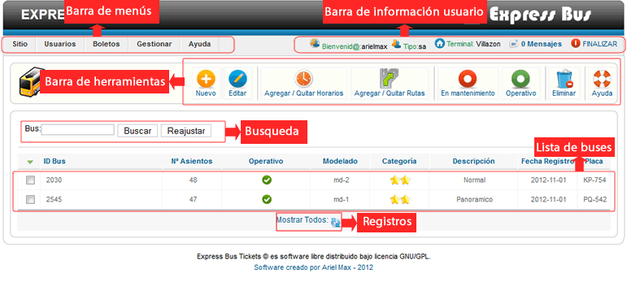
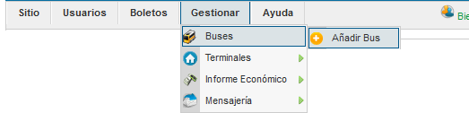
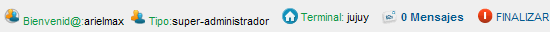

Ayuda Gestor de Buses
Contenido:
- Vista General
- Barra de Menús
- Barra de Información Usuario
- Barra de Herramientas
- Busqueda
- Lista de Buses
- Registros
Vista General
Barra de Menús
La barra de menús nos permite tener un acceso direccto un sector del sistema, permite una mejor navegación por el sistema.
La barra de menús varia en base al tipo de usuario logeado (niveles), si ingresa el super admin tendra mayores opciones en la barra de menús, adiferencia de un usuario de nivel bajo solo vera la barra de menús relacionado con el cargo que este ocupa.
Barra de Información Usuario
La barra de información usuario nos muestra la información del usuario Logeado, también nos permite tener acceso directo a mensajesprovenientes de otros usuarios del sistema, podemos finalizar la aplicación de forma segura haciendo clic en Finalizar.
Barra de Herramientas
Esta el la barra de herramientas del gestor de buses, cada botón nos permite ejecutar una acción en concreto, a continuación explicamos el funcionamiento de cada botón.
 Nuevo
Nuevo
Este botón nos permite agregar un nuevo bus al sistema. se abrira una ventana con un formulario en la cual tendremos que llenar con los datos del nuevo bus y a continuación guardar.
Editar
Este botón nos permite editar la información de un bus. para utilizar esta opción primero seleccionamos un usuario de la lista.
Se abrira una ventana con los datos del bus y ahí mismo podremos actualizar con los nuevos datos del bus, por último guardamos los cambios.
 Agregar/Quitar horarios
Agregar/Quitar horarios
Este botón nos permite agregar horarios de salida a los buses, selecionamos el bus, a continuacion establecemos un horario de la lista pudiendo agregar minustos +, - seleccionar la acción que registra o elimina.
Agregar/Quitar rutas
Este botón nos permite agregar rutas de salida a los buses, seleccionamos el bus, acontinuación establecemos las rutas de la lista, las rutas dependen de las terminales, selecciona la accion que registra o elimina.

En mantenimiento
Este botón nos permite dar de baja un bus temporalmente por razones de mantenimiento técnico. al cambiar a este estado nadie podra utilizar el bus, principalmente por el gestor de boletos.
Operativo
Este botón nos permite poner nuevamente operativo un bus que estaba en mantenimiento. de esta forma el bus podra ser utilizado nuevamente, principalmente por el gestor de boletos.
 Eliminar
Eliminar
Este botón nos permite eliminar de forma permanete un bus seleccionado, utilize esta opción a menos que este realmente seguro de eliminar el bus.
Busqueda
Esta opción nos permite buscar un bus dentro del sitema.El método de busqueda es utilizando parte o el número compledo del id del Bus.
La busqueda solo se realizara global.
Lista de Buses
Esta lista nos nos muestra todos los buses registrados en el sitema. también nos muestra la información del los buses.
Registros

Este botón nos permite actualizar la lista de buses, generalmente es utilizado cuando se utiliza la busqueda y se desea volver al estado inicial.